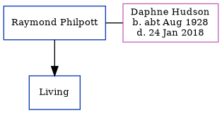

Raymond Alan Philpott
[ Home ] | [ Calendar ] | [ Surnames Index ] | [ Errors ] | [ Family History ]Raymond Philpott, the husband of Daphne Patricia Hudson (the cousin on the mother's side of Nigel Horne), and married Daphne (with whom he had 1 surviving child, ) at St Mary the Virgin Church, Minster, Thanet, Kent, England on 30 Sept 19501.
Citations
- England & Wales, Marriage Index: 1916-2005 Online publication - Provo, UT, USA: The Generations Network, Inc., 2009.Original data - General Register Office. England and Wales Civil Registration Indexes. London, England: General Register Office. © Crown copyright. Published by permission of the Cont
Media
Thanet Advertiser 6 Oct 1950

Thanet Advertiser 6 Oct 1950 (2)

Family Tree
Map
Generated by ged2site. Last updated on Jul 3, 2024